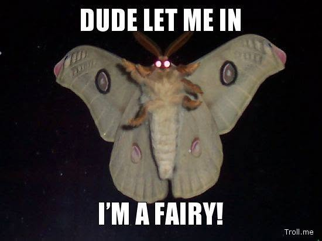

Αρχείο · Επικοινωνία της Επιστήμης
Γιατί τα μυγάκια κουτουλάνε στην οθόνη σου;
Μια σύντομη εξήγηση του φωτοτακτισμού και του πώς το τεχνητό φως μπορεί να μπερδεύει τον προσανατολισμό των νυκτόβιων εντόμων.

Αρχικό κείμενο
Ποιός φταίει που τα μυγάκια το βράδυ κουτουλάνε στην οθόνη του υπολογιστή σου;
Το Φεγγάρι.
Ο όρος φωτοτακτισμός αναφέρεται στην κίνηση ενός οργανισμού ως απόκριση στο φως.
Κάποια έντομα έχουν αρνητικό φωτοτακτισμό και απωθούνται απο το φως (π.χ κατσαριδες) και κάποια θετικό φωτοτακτισμό όπως τα μυγάκια που τα τραβάει το φως της λάμπας.
Τα νυκτόβια αυτά έντομα έχουν εξελιχθεί ώστε να προσανατολίζονται σύμφωνα με το φως της Σελήνης.
Το φως του φεγγαριού λάμπει προς μια δεδομένη γωνία κι έτσι τα έντομα μπορούν να διατηρήσουν ευθεία και σταθερή πορεία το βράδυ.
Το φως της λάμπας είναι δυνατότερο από του φεγγαριού και φωτίζει προς όλες τις κατευθύνσεις μπερδεύοντας τα έντομα, τα οποία τελικά καταλήγουν να κάνουν οχτάρια γύρω από το φως.